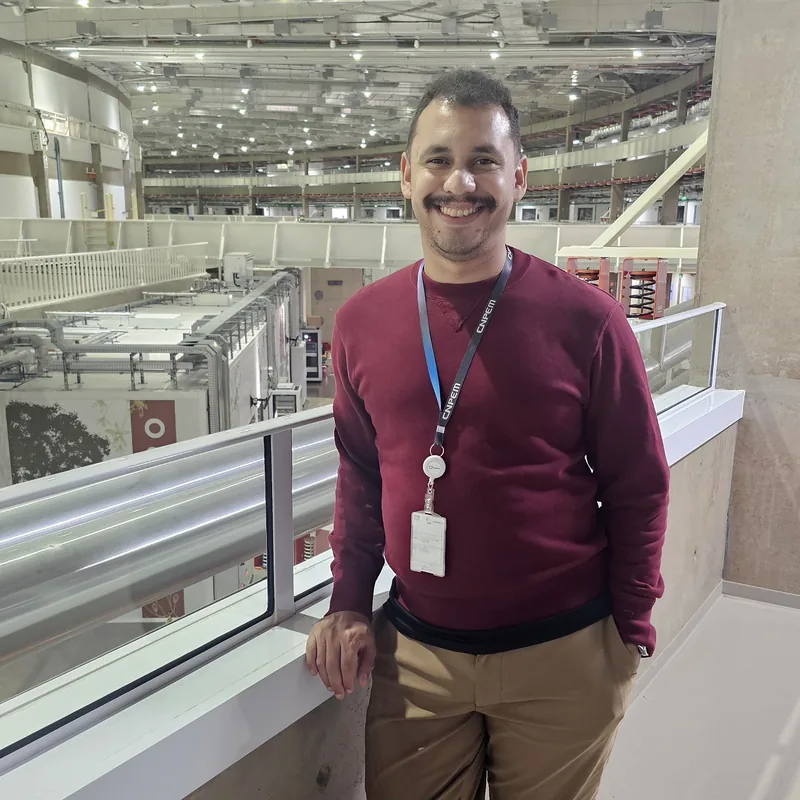
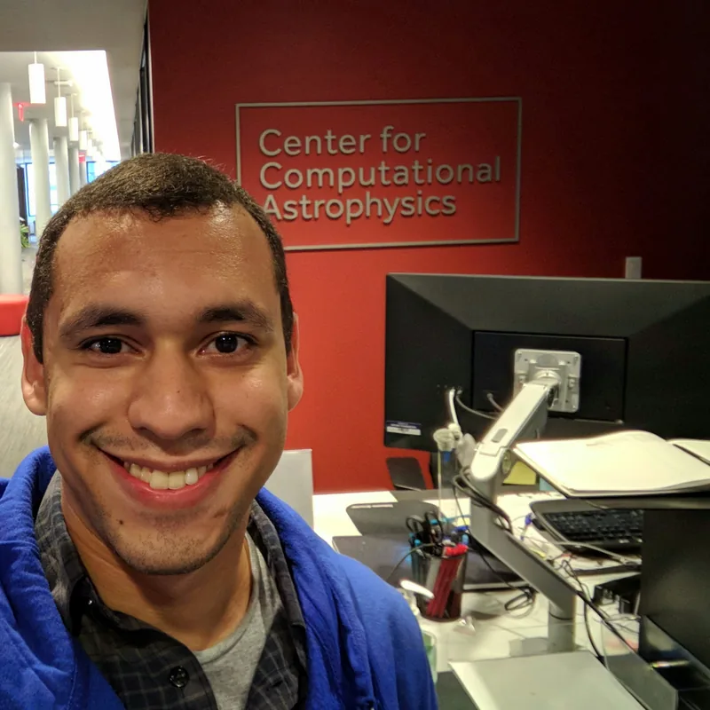
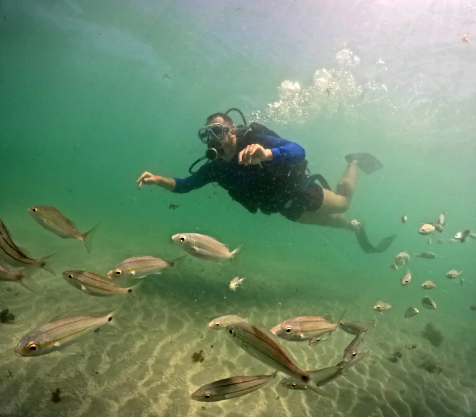

I enjoy solving complex problems, whether analyzing data from the cosmos or simply coding a solution to a problem.
My strong foundation in physics and computational modeling has enabled me to transform raw data into value. My expertise ranges from developing robust ETL/ELT data pipelines to deploying AI models for specific domains: astrophysics, fitness metrics, LLMs, and geospatial analysis.



Strong Gravitational Lensing Compilation - A comprehensive database of strong lensing systems providing tabular data, FITS cutouts, and processed images from multiple wide-field surveys. Featured in "The Last Stand Before Rubin" publication.
Python/C software library for efficient conversion of spherical harmonic coefficients to Cartesian vector representations. Developed for cosmological analysis with applications in CMB data processing and beyond.
Interactive multi-band gallery of gravitational lensing systems observed by the James Webb Space Telescope.
Universidade Federal do Espírito Santo
August 2018 – April 2024
Vitória, ES
Universidade Estadual de Londrina
August 2016 – July 2018
Londrina, PR
Dissertation: Testes de isotropia utilizando vetores de multipolo em pequenas escalas
California State University, San Marcos
July 2013 – May 2014
San Marcos, CA
Science Without Borders Program
Universidade Estadual de Londrina
March 2010 – March 2016
Londrina, PR
arXiv, 2025
arXiv:2509.09798As the Vera Rubin Observatory begins its ten-year survey in 2025, it will probe key observables such as strong lensing (SL) by galaxies and clusters. In preparation for this new era, we assemble an extensive compilation of SL candidate systems from the literature, comprising over 30,000 unique objects that can be used as a watch list of known systems. By cross-matching this sample with photometric and spectroscopic catalogs, we construct two value-added tables containing key parameters for SL analysis, including lens and source redshifts and lens velocity dispersions $\sigma_v$. As a preparation for Rubin, we generate image cutouts for these systems in existing wide-field surveys with subarcsecond seeing, namely CFHTLens, CS82, RCSLens, KiDS, HSC, DES, and DESI Legacy. This sample, dubbed the ``Last Stand Before Rubin'' (LaStBeRu), has a myriad of applications, from using archival data to selections for follow-up projects and training of machine learning algorithms. As an application, we perform a test of General Relativity using these data, combining the effects of motion of massless particles (through SL modeling) and non-relativistic bodies through $\sigma_v$, which allow one to set constraints on the Post-Newtonian parameter $\gamma_{\mathrm{PPN}}$. Using the LaStBeRu database, we present an independent test of $\gamma_{\mathrm{PPN}}$ (distinct from previous analyses) and, for the first time, we present such a test exclusively with systems identifiable in ground-based images. By combining these data with the previously published samples, we obtain the most stringent constraint on $\gamma_{\mathrm{PPN}}$. Our results are consistent with GR at the $\sim$1-$\sigma$ level and with the previous results from the literature.
Proceedings of the International Astronomical Union, 2024
10.1017/S1743921323004222Galaxy-galaxy strong lensing (SL) systems provide a unique opportunity to test modified gravity theories. Deviations from General Relativity are encoded in the post-Newtonian parameter ($\gamma$). As a preparation for the upcoming data from the Vera Rubin Observatory Legacy Survey of Space and Time (LSST), our research group collected imaging data of SL systems from ground-based telescopes and conducted spectroscopic observations of 21 systems on the Southern Astrophysical Research (SOAR) Telescope to measure the lens velocity dispersions, $\sigma_v$. We briefly describe the semi-automated SL modelling of the systems in this sample and combine the results with $\sigma_v$ from SOAR to derive an estimate for $\gamma$. Our preliminary results yield a value of $\gamma=1.17^{+0.29}_{-0.33}$, which is consistent with General Relativity. Although the error bars are limited by the sample size, this result represents the first constraint on modified gravity obtained purely from ground-based data, with a sample completely independent from previous studies, and which allows for a self consistent end-to-end analysis.
The Astrophysical Journal, 2023
10.3847/1538-4357/acdb6cWe build a field-level emulator for cosmic structure formation that is accurate in the nonlinear regime. Our emulator consists of two convolutional neural networks trained to output the nonlinear displacements and velocities of $N$-body simulation particles based on their linear inputs. Cosmology dependence is encoded in the form of style parameters at each layer of the neural network, enabling the emulator to effectively interpolate the outcomes of structure formation between different flat Lambda cold dark matter cosmologies over a wide range of background matter densities. The neural network architecture makes the model differentiable by construction, providing a powerful tool for fast field-level inference. We test the accuracy of our method by considering several summary statistics, including the density power spectrum with and without redshift space distortions, the displacement power spectrum, the momentum power spectrum, the density bispectrum, halo abundances, and halo profiles with and without redshift space distortions. We compare these statistics from our emulator with the full $N$-body results, the COmoving Lagrangian Acceleration (COLA) method, and a fiducial neural network with no cosmological dependence. We find that our emulator gives accurate results down to scales of $k\sim 1$ Mpc$^{-1}$ $h$, representing a considerable improvement over both COLA and the fiducial neural network. We also demonstrate that our emulator generalizes well to initial conditions containing primordial non-Gaussianity without the need for any additional style parameters or retraining.
PNAS Nexus, 2022
10.1093/pnasnexus/pgac250We train a neural network model to predict the full phase space evolution of cosmological $N$-body simulations. Its success implies that the neural network model is accurately approximating the Green's function expansion that relates the initial conditions of the simulations to its outcome at later times in the deeply nonlinear regime. We test the accuracy of this approximation by assessing its performance on well understood simple cases that have either known exact solutions or well understood expansions. These scenarios include spherical configurations, isolated plane waves, and two interacting plane waves: initial conditions that are very different from the Gaussian random fields used for training. We find our model generalizes well to these well understood scenarios, demonstrating that the networks have inferred general physical principles and learned the nonlinear mode couplings from the complex, random Gaussian training data. These tests also provide a useful diagnostic for finding the model's strengths and weaknesses, and identifying strategies for model improvement. We also test the model on initial conditions that contain only transverse modes, a family of modes that differ not only in their phases but also in their evolution from the longitudinal growing modes used in the training set. When the network encounters these initial conditions that are orthogonal to the training set, the model fails completely. In addition to these simple configurations, we evaluate the model's predictions for the density, displacement, and momentum power spectra with standard initial conditions for $N$-body simulations. We compare these summary statistics against $N$-body results and an approximate, fast simulation method called COLA. Our model achieves percent level accuracy at nonlinear scales of $k\sim 1$ Mpc$^{-1}h$, representing a significant improvement over COLA.
arXiv, 2020
arXiv:2012.00240Cosmologists aim to model the evolution of initially low amplitude Gaussian density fluctuations into the highly non-linear "cosmic web" of galaxies and clusters. They aim to compare simulations of this structure formation process with observations of large-scale structure traced by galaxies and infer the properties of the dark energy and dark matter that make up 95% of the universe. These ensembles of simulations of billions of galaxies are computationally demanding, so that more efficient approaches to tracing the non-linear growth of structure are needed. We build a V-Net based model that transforms fast linear predictions into fully nonlinear predictions from numerical simulations. Our NN model learns to emulate the simulations down to small scales and is both faster and more accurate than the current state-of-the-art approximate methods. It also achieves comparable accuracy when tested on universes of significantly different cosmological parameters from the one used in training. This suggests that our model generalizes well beyond our training set.
Physics of the Dark Universe, 2020
10.1016/j.dark.2020.100608We present an efficient numerical code and conduct, for the first time, a null and model-independent CMB test of statistical isotropy using Multipole Vectors (MVs) at all scales. Because MVs are insensitive to the angular power spectrum $C_\ell$, our results are independent from the assumed cosmological model. We avoid a posteriori choices and use a pre-defined range of scales $\ell \in [2, 30]$, $\ell \in [2, 600]$ and $\ell \in [2, 1500]$ in our analyses. We find that all four masked Planck maps, both from the 2015 and 2018 releases, are in agreement with statistical isotropy for $\ell \in [2, 30]$, $\ell \in [2, 600]$. For $\ell \in [2, 1500]$ we detect anisotropies but this is indicative of simply the anisotropy in the noise: there is no anisotropy for $\ell < 1300$ and an increasing level of anisotropy at higher multipoles. Our finding of no large-scale anisotropies seem to be a consequence of avoiding a posteriori statistics. We also find that the degree of anisotropy in the full sky (i.e., unmasked) maps vary enormously (between less than 5 and over 1000 standard deviations) among the different mapmaking procedures and data releases.